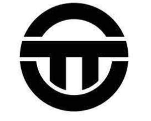

Trade Mark Journal No.2025/046 14 November 2025
UK00004281928 22 October 2025 (9,35,37,39,40,41,42,45)

- Class 9
- Computer software; computer application software downloadable to mobile phones; downloadable and recorded software for sustainability, environmental, and governance (SEG) verification; software for managing supply chain compliance and tender verification; software for assessing and verifying environmental, governance, and compliance capabilities of vendors; software for streamlining tender management processes in large organisations, including railway networks; software for use in railway infrastructure planning, maintenance and safety management; computer software for engineering design, asset management and project scheduling relating to railway systems; downloadable mobile applications for use in railway project management and crew scheduling; scientific, research, navigation, surveying, photographic, cinematographic, audiovisual, optical, weighing, measuring, signalling, detecting, testing, inspecting, life-saving and teaching apparatus and instruments; apparatus and instruments for conducting, switching, transforming, accumulating, regulating or controlling the distribution or use of electricity; surveying instruments and apparatus; laser scanning and measurement devices for track alignment and monitoring; signalling and telecommunications apparatus and instruments for railway systems. .
- Class 35
- Advertising, marketing, and promotional services; brand campaign development and management; development and implementation of marketing strategies; business management; business administration; business consultancy services relating to railway infrastructure and engineering projects; business consultancy and advisory services relating to sustainability, environmental, and governance (SEG) compliance; project management services for construction and civil engineering projects in the rail sector; personnel management services for railway engineering and construction teams; supply chain management consultancy; business auditing services in the field of railway infrastructure, engineering projects and sustainability compliance; business certification services in relation to SEG compliance; tender management consultancy; compilation and analysis of business data relating to sustainability and supply chain compliance; vendor assessment and verification services; business consultancy relating to advertising and marketing; promotional campaigns aimed at encouraging diversity, including in careers; promotional campaigns aimed at encouraging diversity in science, technology, engineering, and mathematics (STEM) careers; organization of promotional events and initiatives to support workforce diversity; consultancy services in the field of workplace diversity, equity, and inclusion (DEI); business advisory services relating to corporate social responsibility (CSR); market research and analysis relating to diversity and inclusion in the workplace; public relations services relating to diversity awareness; dissemination of advertising, marketing, and promotional materials, including online and via social media; organizing and conducting networking events to promote workforce diversity; business consultancy and advisory services relating to employer branding and recruitment marketing; possession management services.
- Class 37
- Construction; installation services; construction of railway infrastructure; maintenance and repair of railway infrastructure, including track systems, signalling and telecommunications; rail welding and track alignment services; installation, maintenance and repair of civil engineering structures for railways; planning and execution of railway possession works; emergency repair services for railway tracks and infrastructure; installation of signalling and communications systems for railway networks.
- Class 39
- Consultancy and advisory services relating to the design and operation of railway infrastructure; coordination of railway logistics and transport infrastructure projects; route and access planning services for third-party works near railway infrastructure; supervision and safety oversight of transport infrastructure activities near operational railway systems.
- Class 40
- Custom manufacture and assembly services; treatment and transformation of materials; metal welding services; metal welding services for railway track components; heat treatment of metal for use in railway construction; custom metal fabrication for railway systems and infrastructure.
- Class 41
- Education and training services; education and training services relating to railway engineering, infrastructure safety and maintenance; organisation of conferences, seminars and workshops in the field of railway infrastructure and civil engineering; provision of online training and certification programmes for railway safety and construction; career development programs; career counseling and coaching services; organization of conferences, workshops, and seminars promoting diversity; arranging and conducting educational programs, courses, and training sessions in diversity, equity, and inclusion (DEI); providing online and in-person training in career advancement and workforce inclusion; publication of educational materials, reports, and research papers in the field of diversity and inclusion; organization of panel discussions, symposiums, and roundtable discussions on workplace diversity; development and provision of e-learning courses and webinars in diversity, equity, and inclusion; training services in leadership development, unconscious bias awareness, and inclusive workplace practices; providing educational mentoring programs for underrepresented groups in various industries; conducting corporate training programs on diversity and workforce engagement; hosting awards and recognition programs for achievements in diversity and inclusion.
- Class 42
- Scientific and technological services and research and design relating thereto; industrial analysis and industrial research services; design and development of computer hardware and software; design services; engineering services; civil engineering services; railway track surveying services; topographical and geotechnical surveying for rail projects; engineering consultancy services in the field of railway infrastructure, signalling and telecommunications; software as a service [SaaS]; providing online, non-downloadable software; software design, development and engineering; computer software consultancy; Software as a Service (SaaS) for sustainability, environmental, and governance (SEG) verification; Software as a Service (SaaS) for tender management and vendor assessment; Software as a Service (SaaS) for supply chain compliance management; design and development of software for sustainability compliance and certification; design and development of software for railway engineering and infrastructure monitoring; hosting of digital platforms for supply chain compliance and certification; data analysis services relating to sustainability and governance compliance.
- Class 45
- Safety assessment and risk analysis services for railway infrastructure projects.
On Track Technicians Ltd
Representative: HGF Limited